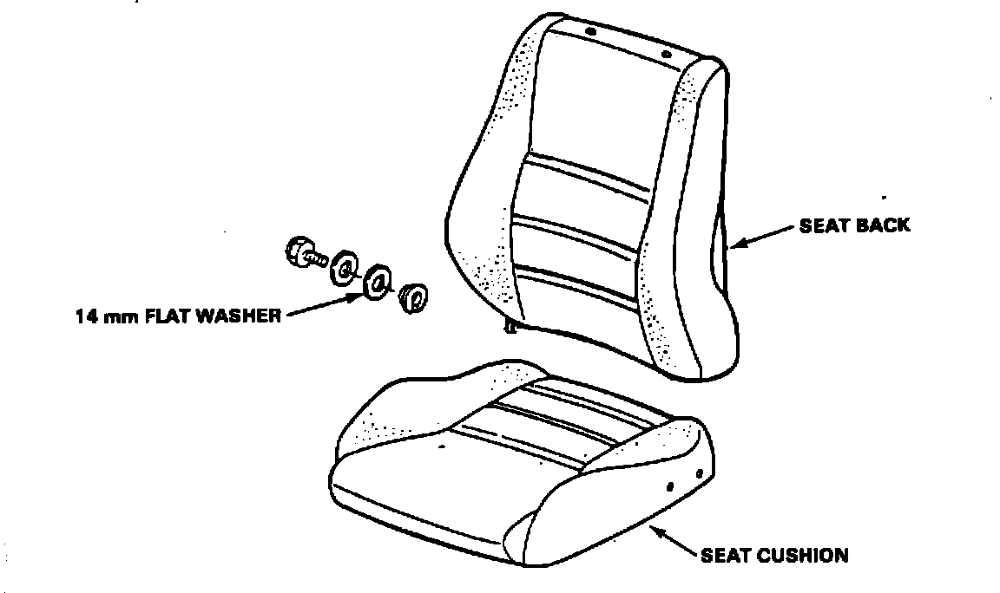

Seat Back - Clunking Noise
86acura01November 3, 1986
YEAR MODEL APPLICATION
1986 INTEGRA SEE AFFECTED
VEHICLES
86-019
Integra Seat Back Noise
SYMPTOM
One or both front seats make a "clunking" noise.
AFFECTED VEHICLES
5 Dr. up to Vin DA1----FS003169 3 Dr. up to Vin DA3----FS002059

CORRECTIVE ACTION
Insert one or two 14 mm washer(s) (see Parts Information) between the existing black plastic seat pivot washer and the pivot boss as shown.
PARTS INFORMATION
14 mm washer: 94101-14000
WARRANTY INFORMATION
Operation number: 852230
Flat Rate Time: 0.2 hour per seat Failed P/N: 90110-SB3-003
Defect Code: 042
Contention Code: B07